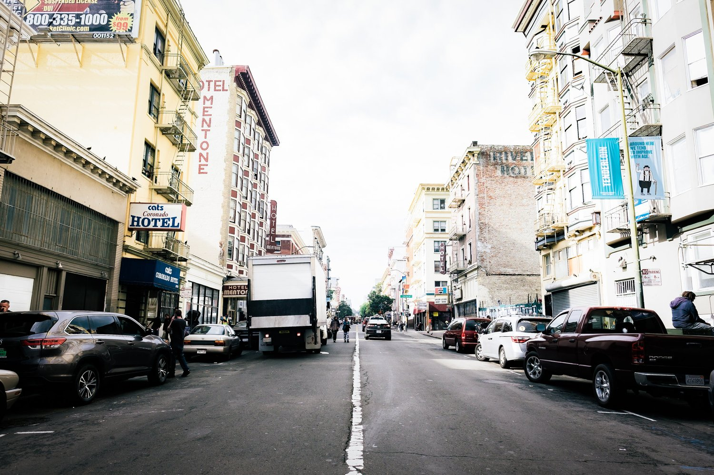

Stories from the street.
News, reflections and stories from life on Ellis Street.
Start up a Business
The School of Transformational Business (SOTB) teaches people to start and run a godly, profitable business. We aim to bring God’s kingdom to earth through every…
Jul 9, 2025 · DTSGreat Commission
The Great Commission is a call for every believer. We, Business with a Mission, organize, train, and equip people to network and take the Gospel to the less-reached…

Business With A Mission
Business With A Mission is a great opportunity to reach out to this generation. The job we do, the people we meet, and our quality of life are influenced by business.

Love Your Neighbor(hood): Tech In The Tenderloin
Let’s all be bridge-builders where we are. Whether you’re here in San Francisco, or somewhere else. As Jesus was Immanuel, God with us, let us who know him be with those…

Love Your Neighbor(hood): The Youth of the Tenderloin
These kids know and embrace that their neighborhood is not always the cleanest, rough around edges or even unsafe at times; and yet they talk about how they know it…

Love Your Neighbor(hood): History of the Tenderloin
These days the Tenderloin is still a welcoming beacon for all. YWAM is able through God’s provision to provide a place for those in need, giving a place to drop-in,…

Reflections on Easter during this crisis
The resurrection of Jesus is my favorite message–story–event ever. Resurrection Day is a day for me that marks the beginning of my year, it reminds me why I breathe, why…
Feb 13, 2020Love Your Neighbor(hood): Restaurants of the TL
Each day we have opportunities to connect; we get to look people in the eye, to learn their names and to know them. We often subconsciously ignore or choose hurry…

Love Your Neighbor(hood): Arts and Murals
Living in the Tenderloin has taught me a lot about seeking out God’s beauty amidst the chaos of daily life. The Tenderloin has always been an eclectic neighborhood…

Love Your Neighbor(hood): Every Tribe, Every Tongue, Every Nation
As I sat on the top level of a tall San Francisco building, I gazed in awe of the beauty. Every flickering light - a person made in God’s image loved and known. As I…

Love Your Neighbor(hood): Seniors of the Tenderloin
What would it look like for you to show up in your community for those who feel forgotten? God is BEYOND our doubts and mustard-seed faith. He is the literal King of…
Oct 8, 2019Love Your Neighbor(hood): Karol Svoboda
Living life together in the Tenderloin enables me to see and understand my neighbors at a much deeper level. We share the unique experience of the Tenderloin together.…

Love Your Neighbor(hood)
Someone once said, “If you want to love your neighbor sometimes you have to start with loving your neighborhood.” To love your neighborhood you have to go out and get…
Aug 27, 2019Stories From The Tenderloin: Natalie's Story
Sarah knocked on our door and gave us a hammer she found – she thought we would need it as we were going to start renovations for our bathrooms. I have so many stories…
Aug 7, 2019Stories From The Tenderloin: Udom's Story
One of the things I love most is getting to cut hair for people. I love seeing the confidence people have after they get a good haircut. This does so much more than just…

Stories From The Tenderloin: Michaela's Story
I started praying for him under my breath and Juan responded in Spanish as I was praying for him. I understood what he was praying and afterward asked him if he had ever…
Jul 23, 2019Stories From The Tenderloin: Emma's Story
I came here expecting to see a change in myself, our friends on the street, and the teams that we would be leading each week. What I didn’t expect, though, was how much…

Stories From The Tenderloin: Hunter's Story
On a Friday in June, our team took bags of snacks into the Tenderloin in hopes of finding someone who could be blessed by lunch and a good conversation. Near the local…